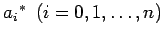
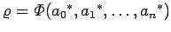
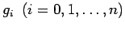
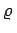

Inhalt Index DeskTop Bronstein

 Numerische Mathematik Approximation, Ausgleichsrechnung, Harmonische Analyse Tschebyscheff-Approximation Remes-Algorithmus
Numerische Mathematik Approximation, Ausgleichsrechnung, Harmonische Analyse Tschebyscheff-Approximation Remes-Algorithmus


Der Alternantensatz ist der Ausgangspunkt für die numerische Lösung der stetigen TSCHEBYSCHEFFschen Approximationsaufgabe. Wählt man als Näherungsfunktion
 |
(19.198) |
mit n+1 linear unabhängigen, bekannten Ansatzfunktionen, dann sollen mit  die Koeffizienten der Lösung der TSCHEBYSCHEFFschen Aufgabe und mit  die zugehörige Minimalabweichung gemäß (19.192) bezeichnet werden. In dem Fall, daß die Funktionen f und  differenzierbar sind, folgt aus dem Alternantensatz
Die Stellen  sind Alternantenpunkte mit
sind Alternantenpunkte mit
Die Gleichungen (19.199) stellen 2n+4 Bedingungen für die 2n+4 unbekannten Größen der TSCHEBYSCHEFFschen Approximationsaufgabe dar: n+1 Ansatzkoeffizienten, n+2 Alternantenpunkte und die Minimalabweichung . Falls die Intervallrandpunkte zu den Alternantenpunkten gehören, brauchen dort die Bedingungen für die Ableitung nicht zu gelten.